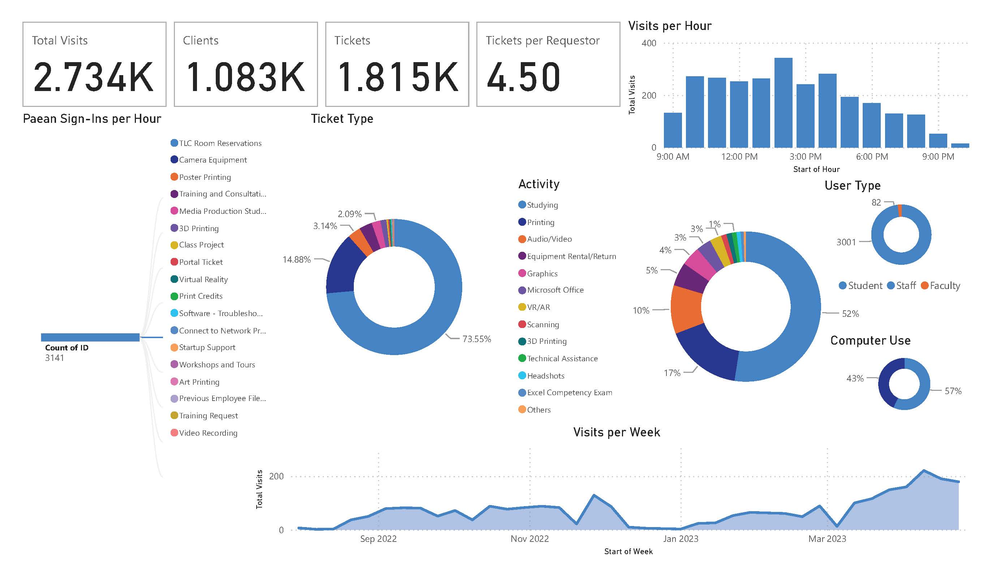
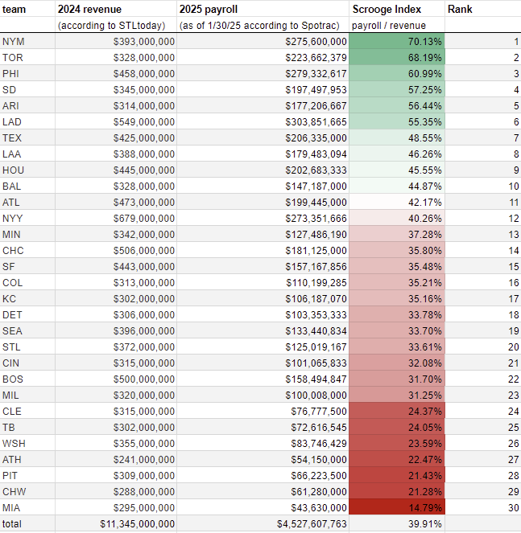
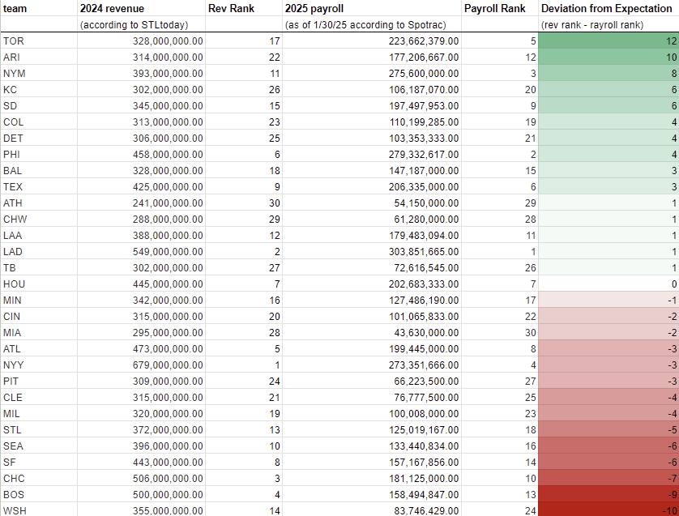

Gallery
Non-Spatial Data Visualization
A collection of works that are non-spatial data visualizations
PowerBI Sample Project · 2023
The following figure was made as a work assignment for my job at the Weinstein Learning Center's Technology Studio at the University of Richmond. The data was gathered from the workspace's proprietary data collection system and Microsoft's PowerBI appilcation was used to generate the output. The output was intented for internal use, what information is being displayed and how was determined not by me, but by the instructions of this work project. This is why pie charts are used and not tree charts.

Scrooge Index · 2025
The following images are from a personal project I untook, where I determined which MLB ownership groups spent the most on their by how much the team makes. I did this by placing their payroll over their revenue to see what percent of said revenue was being used for payroll. I then made another output which ranked their payrolls and revenues from highest to lowest. This second image shows how many teams make more and spend less then (or vise versa) for each team. The purpose of these visualizations is to, with the covtroversy surrounding the Dodgers spending, show how "scroogy" each team is. To accurately show what teams are spending more or less then expected of them based on how much money they make.

